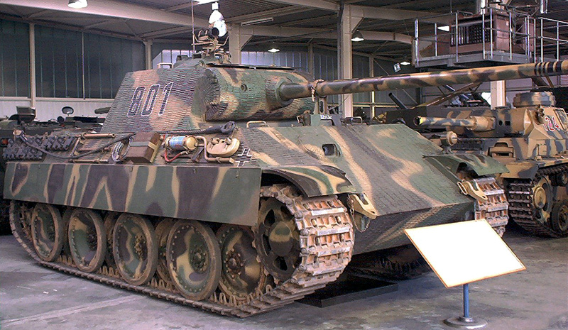

|  |
|
«Пантера» (нем. Panzerkampfwagen V Panther, сокр. PzKpfw V Panther) — немецкий средний танк периода Второй мировой войны. Работы по новому среднему танку, предназначенному для замены PzKpfw III и PzKpfw IV, начались в 1938 году. Проект такой боевой машины массой 20 тонн, над которым работали фирмы «Даймлер-Бенц», «Крупп» и MAN, получил индексацию: VK.30.01 (DB) — проект фирмы «Даймлер-Бенц», и VK.30.02 (MAN) — проект фирмы MAN. Работа над новым танком шла достаточно медленно, поскольку надёжные и проверенные в боях средние танки вполне удовлетворяли немецких военных. Тем не менее, к осени 1941 года конструкция ходовой части была проработана.[5] После начала войны с Советским Союзом немецкие войска встретились с новыми советскими танками — Т-34 и КВ. Первоначально советская техника не вызвала большого интереса у немецких военных, но к осени 1941 года темпы немецкого наступления стали падать, а с фронта начали приходить сообщения о превосходстве новых советских танков — особенно Т-34 — над танками Вермахта. По настоянию Гудериана для изучения советских танков была создана специальная комиссия, в которую входили ведущие немецкие конструкторы бронетанковой техники (в частности Ф. Порше и Г. Книпкамп). Немецкие инженеры детально изучили все достоинства и недостатки Т-34 и других советских танков, после чего вынесли решение о необходимости реализации в немецком танкостроении таких новшеств, как наклонное расположение брони, ходовая часть с большими катками и широкими гусеницами.[6] Работы над 20-тонным танком были прекращены, вместо этого 25 ноября 1941 года фирмам «Даймлер-Бенц» и MAN был выдан заказ на прототип 35-тонного танка с использованием всех указанных конструктивных решений. Перспективный танк получил условное обозначение «Пантера». Для определения наиболее подходящего для вермахта прототипа также была образована «Панцеркомиссия» из ряда видных военных деятелей Третьего рейха. Прототипы будущего танка фирм MAN и «Даймлер-Бенц» Весной 1942 года оба подрядчика представили свои прототипы. Опытная машина фирмы «Даймлер-Бенц» даже внешне сильно напоминала Т-34, было также предложено оснастить танк дизельным двигателем, хотя острая нехватка дизельного топлива в Германии (оно в подавляющем большинстве шло на нужды подводного флота) делала этот вариант бесперспективным. Адольф Гитлер проявлял большой интерес и склонность к этому варианту, фирма «Даймлер-Бенц» даже получила заказ на 200 машин. Однако в итоге заказ был аннулирован, а предпочтение было отдано конкурирующему проекту фирмы MAN. Комиссия отметила ряд преимуществ проекта MAN, в частности, более удачную подвеску, бензиновый двигатель, лучшую манёвренность, меньший вылет орудийного ствола. Также высказывались соображения, что схожесть нового танка с Т-34 приведёт к путанице боевых машин на поле боя и возможным потерям от своего же огня.[6] В результате недостроенный прототип «Даймлер-Бенц» простоял во дворе завода до конца войны. Прототип фирмы MAN был выдержан целиком в духе немецкой танкостроительной школы: переднее расположение трансмиссионного отделения и заднее — моторного, индивидуальная торсионная «шахматная» подвеска конструкции инженера Г. Книпкампа. В качестве основного вооружения на танк устанавливалась указанная фюрером 75-мм длинноствольная пушка фирмы «Рейнметалл». Выбор относительно небольшого калибра определялся желанием получить высокую скорострельность и большой боезапас внутри танка. Интересно, что в проектах обеих фирм немецкие инженеры сразу же отказались от подвески типа Кристи, использовавшейся в Т-34, сочтя её конструкцию негодной и устаревшей. Над созданием «Пантеры» работала большая группа сотрудников фирмы MAN под руководством главного инженера танкового отдела фирмы П. Вибикке. Значительный вклад в создание танка внёс инженер Г. Книпкамп (ходовая часть) и конструкторы фирмы «Рейнметалл» (пушка). После выбора прототипа началась подготовка к быстрейшему запуску танка в серийное производство, которое началось в первой половине 1943 года. |